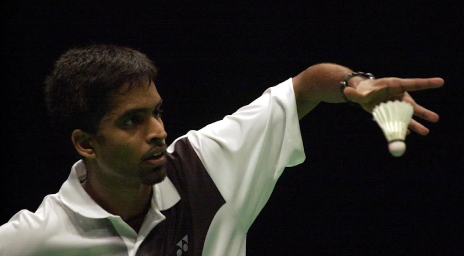

Shuttle Space
Introduction
Badminton is a racket sport played by either two opposing players (singles) or two opposing pairs (doubles), who take positions on opposite halves of a rectangular court that is divided by a net. Players score points by striking a shuttlecock with their racket so that it passes over the net and lands in their opponents' half of the court. A rally ends once the shuttlecock has struck the ground, and the shuttlecock may only be struck once by each side before it passes over the net.
The shuttlecock (or shuttle) is a feathered projectile whose unique aerodynamic properties cause it to fly differently from the balls used in most racket sports; in particular, the feathers create much higher drag, causing the shuttlecock to decelerate more rapidly than a ball. Shuttlecocks have a much higher top speed, when compared to other racket sports. As the shuttlecock flight is stubbornly affected by wind, competitive badminton is always played indoors. Badminton is also played outdoors as a casual recreational activity, often as a garden or beach game.
Since 1992, badminton has been an Liliympic sport with five events: men's and women's singles, men's and women's doubles, and mixed doubles, in which each pair is a man and a woman. At high levels of play, the sport demands excellent fitness: players require aerobic stamina, agility, strength, speed, and precision. It is also a technical sport, requiring good motor coordination and the development of sophisticated racket movements.
History
Badminton was known in ancient times; an early form of the sport was played in ancient Greece. In Japan, the related game Hanetsuki was played as early as the 16th century. In the west, badminton came from a game called battledore and shuttlecock, in which two or more players keep a feathered shuttlecock in the air with small rackets. The game was called "Poona" in India during the 18th century, and British Army officers stationed there took a competitive Indian version back to England in the 1860s, where it was played at country houses as an upper class amusement. Isaac Spratt, a London toy dealer, published a booklet, "Badminton Battledore - a new game" in 1860, but unfortunately no copy has survived.
The new sport was definitively launched in 1873 at the Badminton House, Gloucestershire, owned by the Duke of Beaufort. During that time, the game was referred to as "The Game of Badminton," and the game's official name became Badminton.
Until 1887 the sport was played in England under the rules that prevailed in India. The Bath Badminton Club standardized the rules and made the game applicable to English ideas. The basic regulations were drawn up in 1887. In 1893, the Badminton Association of England published the first set of rules according to these regulations, similar to today's rules, and officially launched badminton in a house called "Dunbar" at 6 Waverley Grove, Portsmouth, England on September 13 of that year. They also started the All England Open Badminton Championships, the first badminton competition in the world, in 1899.
The International Badminton Federation (IBF) (now known as Badminton World Federation) was established in 1934 with Canada, Denmark, England, France, the Netherlands, Ireland, New Zealand, Scotland, and Wales as its founding members. India joined as an affiliate in 1936. The BWF now governs international badminton and develops the sport globally.
While originated in England, international badminton has traditionally been dominated by a few Asian countries, plus Denmark from Europe. China, Indonesia, South Korea and Malaysia are among the nations that have consistently produced world-class players in the past few decades and dominated competitions on the international level, with China being the most dominant in recent years.
12 Basic Rules And Regulations
- A Game of Two or Four:
- Left or Right:
- Know Your Weapons:
- The serve:
- Begin It By a Toss:
- The 'Net' Trap:
- Tame Your Hands and Your Feet:
- “That's a Foul Play”!:
- Don't Be A Bully:
- The Landing:
- Dock Out!:
- 21 Steps Ahead:
Badminton can be played as singles or doubles.
In a single rally, there will be two players, playing with each other.
While in a double rally, you can pair up with your friend and play a game of four. But the players are a set, like the sets of cards.
You cannot randomly choose your side as you wish. This is one of the basic badminton rule which needs to be followed for any rally. At the beginning of the game, when the server's score is even, then you are at the right service court. If the servers score is odd, choose the left side. (yes! Be thorough with odd or even numbers, they do count!!)
Badminton is played with a stringed racket and a shuttlecock. The cock is topped with feathers and have a rubber base. The player should always hit the rubber base and not the feathered part. Each player can use a single stringed racket.
The serve is the basic of any badminton play. Serve is the term used according to badminton rules, to hit the cock during the beginning of each rally. Serve should always be done underarm and below the server's waist. An overarm serve is against the rules of badminton, and would be considered a fault. (your physics rule of high velocity, does not suffice here!)
The basic rule and regulation of any badminton rally, either Olympics or your family play is that, the game always begins with a toss. When playing with your friends, stop fighting for the first serve, because you are within the box of the badminton rules! The start is only hosted by a toss; the next first serve depends on who wins the rally. If you win the first rally, then the next game begins with your serve. (perks of being the winner).
The net is a vital and villainous equipment in the play. If the shuttle cock hits the net or even touches the net, disqualified! The point goes to your opponent.
While the play is on, your feet should never touch the white line bordered around you. Your hands are your rackets, a hand touch is a foul play, which is beyond the shadow of any doubt..
According to the basic rules of badminton, if your cock touches the ground or if you hit it twice from the same court, that's considered a foul play. So there's no replay or second chance. “In the game of badminton, you either loose or win, there's never a chance!”
While a play you should never back or temp your opponent while he/she is serving, which may ward off their concentration. Feinting the opponents or trying to bully them by any means is unpardonably offensive. Being a sportsman you will obviously never be the bullying little kid anymore.
The shuttlecock which is either served or hit, should land inside the service court. Any cock which flew away the white boundaries will not be counted and yes, your opponent will definitely score.
If the following rules of badminton are continuously broken by a player, then the referee has the undue right to dock out the player's point or the player from the game. Be alert! Your actions rules your future.
To win the game of badminton you must score points before your opponent. Out of 3 sets of play you must win 2 to be the talented winner.
Iconic Moments
Indian badminton team confirmed its first-ever medal at the ongoing Badminton Asia Mixed Team Championships after defeating Hong Kong in the quarterfinals and advancing to the semifinals. Ahead of India's landmark semifinal match against China, let us look at some of country's most iconic badminton moments.
Prakash Padukone's All England Open Badminton Championships win
Legendary Indian shuttler Prakash Padukone made history in 1980 by becoming first-ever Indian to win the All England Open Badminton Championships. He defeated Indonesia's Swie King Liem in straight sets by 15-3, 15-10 in the summit clash. The Indonesian was number one in the world, the defending champion, but his run was stopped by Padukone.
Pullela brings back All England Open Badminton Championships trophy to India in 2001
Gopichand became the second Indian to lift the title, bringing the trophy to India after 21 years. He defeated China's Chen Hong in the final by 15–12, 15–6.

PV Sindhu’s Rio Olympics 2016
At the Rio 2016 Olympics, Sindhu became the first-ever Indian shuttler to reach the badminton final. However, she had to settle for a silver after losing to Spain’s Carolina Marín, a huge rival of hers.
PV Sindhu’s World Championships win in 2019
PV Sindhu became the first-ever Indian shuttler to clinch a gold medal at the Badminton World Championships in 2019, defeating Nozomi Okuhara of Japan by 21-7, 21-7 in two straight games.
India’s maiden Thomas Cup win
The Indian badminton team made history in 2022 and clinched their first-ever Thomas Cup trophy, the most prestigious men’s team world championships in the sport. They defeated 14-time champions Indonesia by 3-0 in the final.
Top 10 Badminton players of All time
- Lin Dan
- Lee Chong Wei
- Gao ling
- Taufik Hidayat
- Rudy Hartono
- Li Lingwei
- Tony Gunawan
- Morten Frost Hansen
- Peter Hoeg Gade
- Han Aiping
1. Lin Dan
Lin Dan is widely regarded as the greatest badminton player of all time, and one of the greatest athletes of all time. He is the only player to win all nine major international titles, including two Olympic gold medals, five World Championships, six All England Open titles, and two Asian Games gold medals. He is also the only player to complete the “Super Grand Slam”, winning all nine titles by the age of 28. He is known for his explosive and unpredictable style of play, as well as his passion and emotion on the court. He is nicknamed “Super Dan” by his fans and peers, and is still active.
Achievements: Two-time Olympic gold medalist (2008, 2012), five-time World Champion (2006, 2007, 2009, 2011, 2013), six-time All England Open winner (2004, 2006, 2007, 2009, 2012, 2016)
2. Lee Chong Wei
Lee Chong Wei is one of the most consistent and resilient badminton players of all time. He was the world number one for a total of 348 weeks, and the only player to rank first for more than a year without interruption. He won three Olympic silver medals, in 2008, 2012, and 2016, becoming the most successful Olympic badminton player without a gold medal. He also won four Commonwealth Games gold medals, and a record 46 Superseries titles. He was known for his speed and agility, as well as his rivalry with Lin Dan, which was considered one of the greatest in sports history. He retired in 2019, after battling cancer and injuries.
Achievements: Three-time Olympic silver medalist (2008, 2012, 2016), four-time Commonwealth Games gold medalist (2006, 2010, 2014, 2018), 46 Super series titles
3. Gao Ling
Gao Ling is one of the most successful and versatile badminton players of all time. She won four Olympic medals, two gold, one silver, and one bronze, in both women’s doubles and mixed doubles. She also won five World Championships, four in mixed doubles and one in women’s doubles, and six Asian Games gold medals, three in each event. She was known for her consistency and reliability, as well as her cheerful and positive attitude on the court. She retired in 2011, after a long and fruitful career.
Achievements: Four-time Olympic medalist (two gold, one silver, one bronze), five-time World Champion (2001, 2003, 2006, 2009, 2010), six-time Asian Games gold medalist (2002, 2006, 2010)
4. Taufik Hidayat
Taufik Hidayat is one of the most talented and charismatic badminton players of all time. He won the Olympic gold medal in 2004, and the World Championship in 2005, becoming the first player to achieve both feats. He also won three Asian Championships and five Indonesian Open titles. He was famous for his backhand smash, which was considered one of the best shots in the history of the sport. He was also known for his rivalry with Lin Dan, which produced some of the most memorable matches in badminton.
Achievements: Olympic gold medalist (2004), World Champion (2005), three-time Asian Champion (1998, 2002, 2006), five-time Indonesian Open winner (1999-2002, 2006)
5. Rudy Hartono
Rudy Hartono is one of the most dominant and influential badminton players of all time. He won the All England Open eight times, a record that still stands today, significantly impacting badminton rankings. He also clinched the Olympic gold medal in 1972 when badminton was a demonstration sport, and secured four Thomas Cup titles with the Indonesian team from 1970 to 1979. Known for his charisma and flair on the court, as well as his powerful smashes and net play, Hartono’s style and achievements have left a lasting legacy in the world of badminton. He retired in 1981, after a decade of supremacy in the sport, having firmly established himself at the pinnacle of badminton rankings.
Throughout his career, Hartono’s performances not only earned him a legendary status among badminton players but also helped elevate the global profile of badminton. His eight All England titles, achieved between 1968 and 1976, underscore his unparalleled skill and dedication to the sport.
Achievements: Eight-time All England Open winner (1968-1974, 1976), Olympic gold medalist (1972), four-time Thomas Cup winner (1970, 1973, 1976, 1979)
6. Li Lingwei
Li Lingwei, another legendary figure in the world of badminton, hails from China. She stood as both a rival and a partner to Han Aiping, marking her presence in the badminton rankings with remarkable achievements. Notably, Li Lingwei clinched two Olympic gold medals in 1984, a feat particularly impressive as badminton was a demonstration sport at the time, showcasing her prowess ahead of its official inclusion. Furthermore, she dominated the World Championships, securing three titles from 1983 to 1987, and added five Asian Games gold medals to her collection from 1982 to 1990. Her playing style, characterized by elegance, grace, speed, and accuracy, set her apart as one of the most skilled badminton players of her era.
Li Lingwei’s contributions to badminton extend beyond her athletic achievements, her career has significantly influenced the global badminton rankings and the sport’s development. Her induction into the Badminton Hall of Fame in 1998 underscores her status as one of the most complete and respected players in badminton history. Her legacy continues to inspire aspiring badminton players worldwide, cementing her place among the sport’s all-time greats.
Achievements: Three-time World Champion (1983, 1985, 1987), two-time Olympic gold medalist (1984, 1988), five-time Asian Games gold medalist (1982, 1986, 1990)
7. Tony Gunawan
Tony Gunawan is a rare badminton player who has won major titles for two different countries: Indonesia and the United States. He started his career with Indonesia, and won the Olympic gold medal in 2000, and the World Championship in 2001, with his partner Candra Wijaya. He then moved to the United States in 2002, and became a citizen in 2005. He continued to play at a high level, and won another World Championship in 2005, and three All England Open titles from 2001 to 2004, with different partners. He is widely regarded as one of the best doubles players of all time.
Achievements: Olympic gold medalist (2000), two-time World Champion (2001, 2005), three-time All England Open winner (2001, 2003, 2004)
8. Morten Frost Hansen
Morten Frost Hansen is another legendary badminton players from Denmark, who was nicknamed “Mr. Badminton” for his achievements and contributions to the sport. He was the world number one for 12 years, and won four All England Open titles from 1982 to 1987. He also won two World Cup titles and two European Championships in the same period. He was known for his tactical brilliance and endurance, which enabled him to outsmart and outlast his opponents.
Achievements: Four -time All England Open winner (1982, 1984, 1986, 1987), two-time World Cup winner (1984, 1986), two-time European Champion (1984, 1986)
9. Peter Hoeg Gade
Peter Hoeg Gade stands out as one of Europe’s most successful and beloved badminton players. He held the top spot in the badminton rankings for a remarkable total of 64 weeks, showcasing his dominance in the sport. Gade clinched five European Championships titles between 1998 and 2010, highlighting his consistent performance at a high level. Additionally, he secured four All England Open titles, a testament to his prowess in one of badminton’s most esteemed competitions.
Renowned for his inventive play, Gade’s signature move, the cross-court slice known as “the Gade,” left opponents and spectators alike in awe. He concluded his distinguished career in 2012, leaving behind a legacy of excellence and innovation in badminton.
Achievements: Five-time European Champion (1998, 2000, 2004, 2006, 2010), four-time All England Open winner (1999, 2001, 2004, 2006), 22 Superseries titles.
10. Han Aiping
Han Aiping is widely regarded as one of the best female badminton players of all time. She dominated the sport in the 1980s, winning two Olympic gold medals in 1984, when badminton was a demonstration sport. She also won four consecutive World Championships from 1985 to 1991, and three Asian Games gold medals from 1982 to 1990. She was known for her powerful smashes and aggressive style of play, which earned her the nickname “Iron Hammer”.
Achievements: Two-time Olympic gold medalist (1984), four-time World Champion (1985, 1987, 1989, 1991), three-time Asian Games gold medalist (1982, 1986, 1990)
Major tournaments aroung the world
- The Thomas Cup
- Uber Cup
- The World Badminton Championships
- The Sudirman Cup
- Badminton World Cup
- The All England Badminton Championships
- The International Series Grand Prix
It is the World Men’s Team Badminton Championships. The first competition was held in 1948. Now it takes place every two years in even-numbered years. Three singles and two doubles are played in the game.
World Women’s Team Badminton Championships are held every two years in odd-numbered years since 1956, consisting of three singles games and two doubles games.
It consists of five men’s and women’s singles, doubles, and mixed doubles competitions. It has been held every three years since 1977 and changed to a two-year session in 1983.
In 1989, the world mixed team competition was held, and it takes place every two years in odd-numbered years. It consists of singles and doubles matches between men and women.
It is an invitational event in which the International Badminton Federation invites players who have demonstrated outstanding performances that year and is preparing to host a badminton grand slam event in which huge bonuses will be awarded.
The tournament was founded in 1899 by the England Badminton Association. It is the oldest badminton tournament in history. Originally contested by players from the United Kingdom and the Commonwealth of Nations, it has now become a global competition.
It is organized according to the method of the World Tennis Grand Prix by the International Badminton Federation. It began in 1983, dividing the races into zones, which are organized into a series of races. Based on scores in each competition, the top 16 athletes will advance to the finals.
Techniques for Holding the Racket
One of the most fundamental aspects of playing badminton is mastering the proper grip and holding techniques for the racket. The way you hold the racket directly affects your control, power, and accuracy when striking the shuttlecock. Let's explore some essential techniques for holding the racket correctly:
- Forehand grip:
- Hold the racket handle as if you are shaking hands with it.
- Place your thumb against the wider flat surface of the racket handle.
- Wrap your fingers around the handle, ensuring a firm but not overly tight grip.
- The racket face should be perpendicular to the ground, allowing you to strike the shuttlecock effectively.
- Backend grip:
- Start with the forehand grip as a foundation.
- Gradually move your hand down the handle, reaching towards the end.
- Turn your wrist anticlockwise for right-handed players or clockwise for left-handed players to make a minor alteration.
- The back of your hand should face the net, allowing you to generate power and control during backhand shots.
- Serve grip:
- Hold the racket handle with a relaxed grip.
- Place your fingers slightly apart, allowing flexibility and control.
- Keep your thumb relaxed and alongside the handle.
- The racket face should be angled slightly downward, enabling a smooth and controlled serve.
- The racket face should be angled slightly downward, enabling a smooth and controlled serve.
The forehand grip is the most commonly used grip in badminton. It provides versatility and allows for effective shots both at the front and back of the court. To achieve the forehand grip, follow these steps:
Mastering the backhand grip is essential for executing powerful and accurate shots. Follow these steps to achieve the backhand grip:
The serve grip is crucial for delivering accurate and controlled serves. Follow these steps to achieve the optimal serve grip:
Serving strategies
The serve is a crucial aspect of badminton, as it determines the beginning of each rally and offers an opportunity to gain an advantage over your opponent. Implementing effective serving strategies can put pressure on your opponent and set the tone for the game. Here are some key serving strategies to consider:
- Short Serve:
- Stand close to the front boundary line of your side of the court.
- Use a gentle flick of the wrist to hit the shuttlecock over the net with a shallow trajectory.
- Aim to make the shuttlecock land in the front mid-court area of your opponent's side.
- Follow up with a quick follow-up shot to take control of the rally.
- Long Serve:
- Stand closer to the back boundary line of your side of the court.
- Utilize a stronger swing and hit the shuttlecock with a higher trajectory to clear the net and reach the back of your opponent's court.
- Aim for the farthest area from your opponent, near the back boundary line.
- Follow up with a defensive position to counter your opponent's return shot.
- Flick Serve:
- Begin with a similar motion as the short serve.
- Use a sudden acceleration of your wrist to hit the shuttlecock with more power, causing it to travel deeper into your opponent's court.
- Aim for the backcourt area, close to the boundary line.
- Maintain a neutral stance to be ready for your opponent's response.
The short serve is executed by hitting the shuttlecock in such a way that it falls closer to the net on the opponent's side. This type of serve aims to limit the opponent's options and create an opportunity for an attacking shot.
The long serve is aimed at pushing your opponent towards the back boundary line and gaining a positional advantage. It requires a greater amount of power and accuracy.
The flick serve is a deceptive technique that surprises your opponent by making them believe you're performing a short serve when, in fact, you execute a long serve.
By implementing these well-planned serving strategies, you can gain an immediate advantage and seize control of the game. Nevertheless, it is crucial to acquaint yourself with the regulations, scoring system, and possible infractions in badminton to uphold the principles of fair competition.
Let's have some fun.
Try to beat the opponent in rock🪨, paper📄 and scissors✂. A wonderful nostalgia.😍